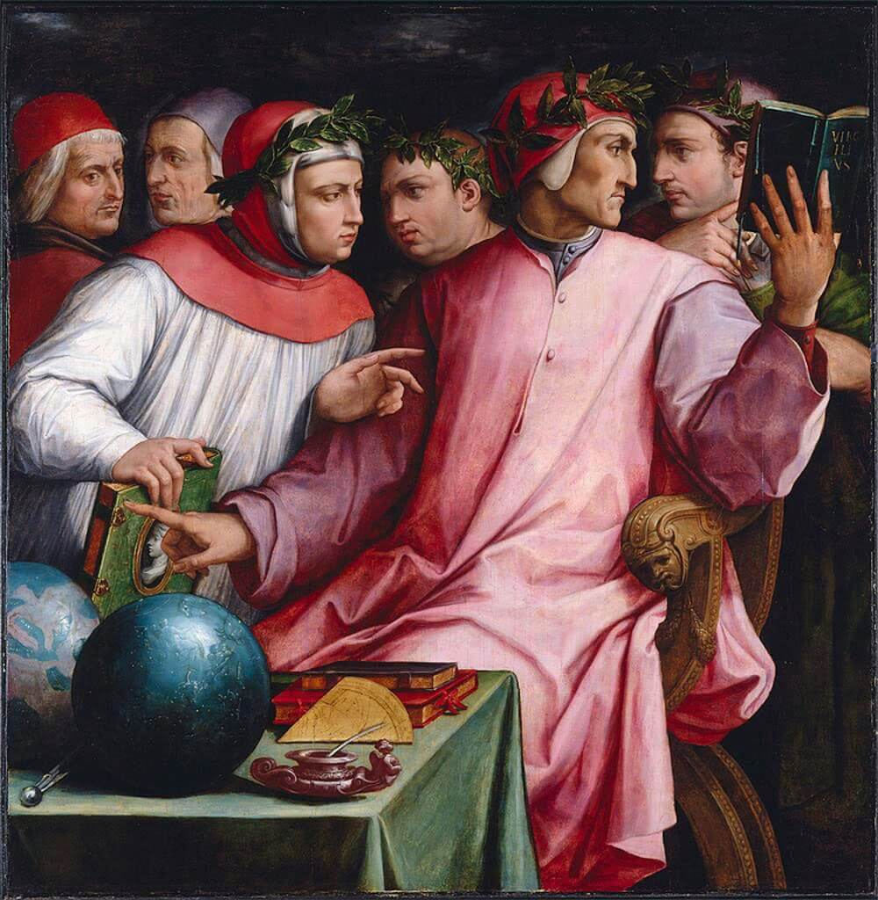
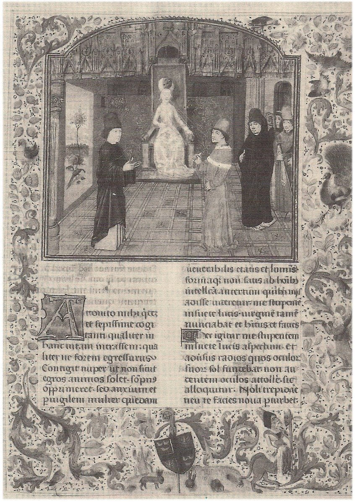
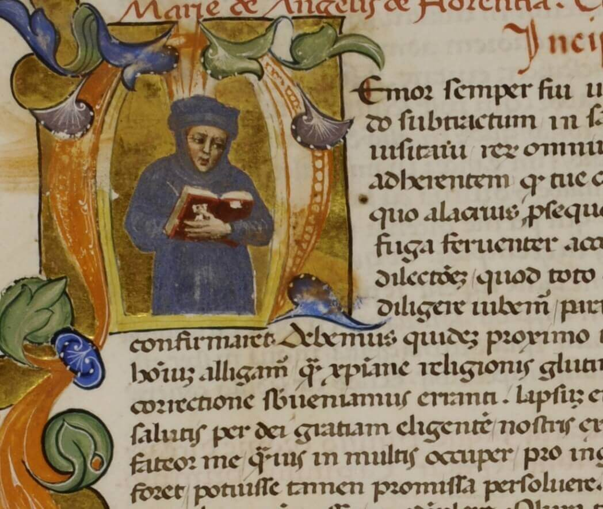
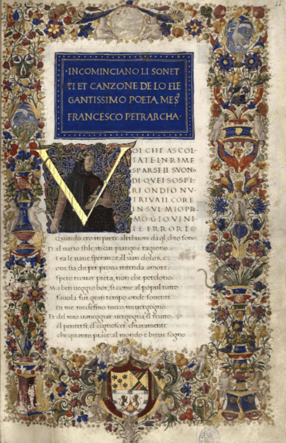
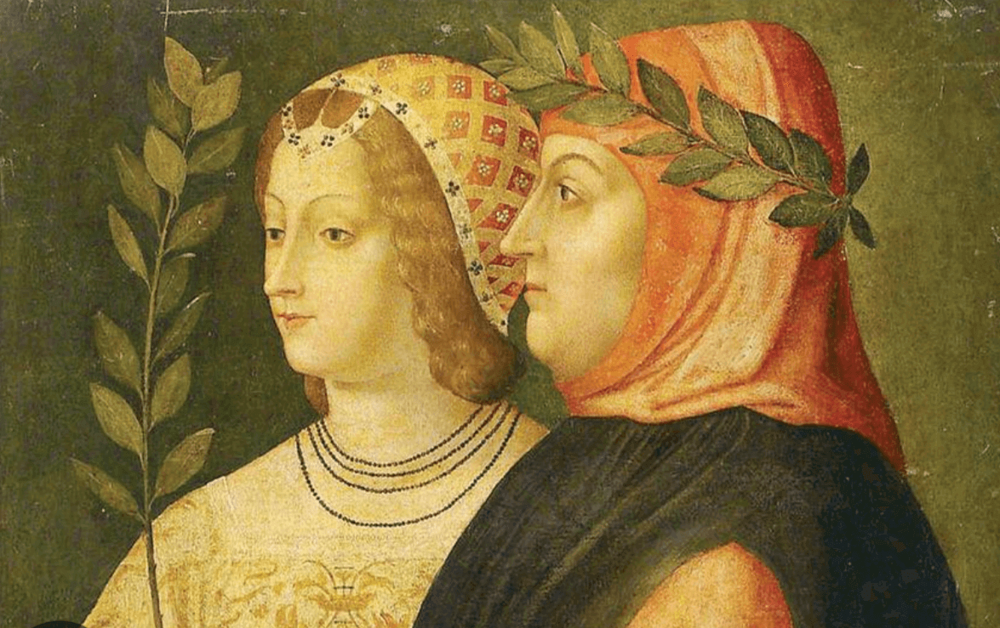

Petrarca nasce ad Arezzo nel 1304 da una famiglia fiorentina di origine borghese. Il padre, ser Petracco, era un notaio e Guelfo Bianco mandato in esilio a seguito della Vittoria Dei Guelfi Neri che si erano impadroniti di Firenze. Petrarca intraprende studi giuridici,la sua ispirazione letteraria lo porta a rinunciare agli studi per andare ad Avignone, dove risiedeva la corte papale. Si dedica a studi classici ed è legato in particolar modo alle "Confessioni", un libro di Sant'Agostino. La lingua da lui prediletta è il latino, ma è attratto anche dalla poesia lirica in volgare. Prendendo a modello Dante e gli stilnovisti, Petrarca fa ruotare tutto attorno ad una figura femminile, Laura.
Il ruolo da intellettuale

Petrarca rappresenta una figura di intellettuale nuova rispetto al passato.
Non si tratta più di un itellettuale comunale come Dante, legato alla città, ma di uno cosmopolita, cioè cittadino del mondo che si sente sradicato dalla sua città.
Petrarca, dunque, non è più l'intellettuale-cittadino che partecipa attivamente alla vita politica del suo Comune, ma diventa un intellettuale cortigiano, vivendo nel periodo delle Signorie; infatti ha funzioni pubbliche: dà consigli ai signori, dà lusttro alle corti e in cambio riceve incarichi politici che lo ripagano economicamente.
Il poeta, infine, anticipa la figura intellettuale del chierico: colui che trae sostentamento da cariche e benefici ecclesiastici e il possibile accesso a tutti i libri.
La letteratura viene considerata come la più alta realizzazione dello spirito umano, l'humanitas (l'interiorità dell'uomo). Per Petrarca la letteratura ha funzioni educative, trasmettendo la cultura del passato del mondo classico senza fini pratici.

Le opere
Il Secretum (opera religioso-morale)
Il Secretum è un'opera scritta in latino in un momento di crisi religiosa. L'opera è divisa in tre libri ed è un dialogo filosofico tra il poeta e Sant'Agostino in presenza di una donna che allegoricamente rappresenta la Verità. In questa opera la personalità di Petrarca si sdoppia in due personaggi: Sant'Agostino, che rappresenta la coscienza, e Francesco, che rappresenta il peccatore.
Nel primo libro Agostino rimprovera Petrarca per la sua debolezza della volontà.
Nel secondo libro vengono elencati i sette peccati capitali e si sofferma in particolar modo su quello che più gravemente affligge il poeta, cioè l'accidia (la mancanza di volontà che porta alla tristezza perenne).
Il poeta, infine, anticipa la figura intellettuale del chierico: colui che trae sostentamento da cariche e benefici ecclesiastici e il possibile accesso a tutti i libri.
Le raccolte epistolari (opera umanistica)
Le raccolte epistolari sono componimenti letterari in prosa latina. Racchiude 41 libri, di cui 24 detti "Familiari" e 17 detti "Senilli"; mentre a parte si collocano le lettere "Sine nomine", cioè senza nome del destinatario, chiamate così per ragioni di prudenza, dato che Petrarca tratta polemiche contro la corruzione della Chiesa contemporanea (paragona la curia avignonese a Babilonia); infine sono presenti le "Varie", lettere riunite da amici e collaboratori. Non si tratta di documenti che riguardano una vita vissuta, ma una trasfigurazione letteraria della realtà attraverso le quali il poeta evidenzia il bisogno di esplorare la propria interiorità, di studiarsi e confessarsi. Con queste lettere Petrarca vuole fissare un'immagine ideale del letterato e del dotto composta dalla fede in una cultura disinteressata e dal fastidio per le attività pratiche verso un'esistenza quieta e appartata. In particolare l'elevatezza intellettuale e morale del dotto devono assumere funzione pubblica, per cui il letterato deve porsi come esempio. Infine il poeta deve dedicarsi alla scrittura solo per amore e non per ricavarne qualcosa.


Il Canzoniere
La struttura dell'opera
Petrarca si rende conto che il latino aveva raggiunto una condizione elevata, mentre il volgare era considerato un terreno vergine; quindi capisce che quest'ultimo può recargli fama. A seguito della morte di Laura, il Canzoniere ha una struttura bipartita:
"Rime in vita", in cui viene descritta così com'é;
"Rime in morte", in cui la sua figura viene trasfigurata: ha pietà e compassione.
Petrarca subisce poi anche l'influsso del tempo, infatti ha paura della morte e di essere giudicato da Dio, quindi decide di avvicinarsi a Lui scrivendo una preghiera alla Vergine. Per questo l'opera viene paragonata alla Commedia, ma in questo caso il conflitto non si risolve.
La figura dell'amata
L'opera ruota intorno all'amore per una donna, Laura, che diventa un dato oggettivo per poi assumere un senso letterale, romanzato. La donna viene descritta come sottoposta allo scorrere del tempo, la sua bellezza viene rappresentata con immagini stilizzate, cioè con elementi tipici del mondo poetico e troppo generici. I vari particolari non compongono un'immagine definita ma rispondono ad un formulario tradizionale: vago profilo di una bella donna bionda (i capelli d'oro, i bei occhi, il dolce sorriso). Come la donna, anche il paesaggio è stilizzato, caratterizzato da elementi generici come fiori, acque limpide, cieli sereni, che compongono l'immagine del locus amoenus (luogo ameno).

"Dissidio" petrarchesco
Ciò che caratterizza la spiritualità di Petrarca è un bisogno di eterno, un approdo stabile in cui l'animo trovi pace perfetta. In contrasto, egli sente con angoscia la precarietà di tutte le cose umane, derivate da una continua inquietudine interiore e un senso di inappagamento eterno. Perciò l'opera vorrebbe offrirsi come la vicenda di un'anima che si libera e che si innalza a Dio, infatti si conclude con la preghiera alla Vergine e con l'invocazione alla "pace". Si può, dunque, dire che il viaggio dell'anima non può concludersi e il dissidio interiore non trova una soluzione.
Classicismo formale e crisi interiore
Al contrario di Dante (plurilinguismo), Petrarca preferisce l'unilinguismo, infatti fa una selezione, descrivendo il proprio io attraverso il labor limae (linguaggio ricercato), escludendo ogni apsetto concreto o umile della vita quotidiana. Mentre Dante ha la fede in un perfetto ordine divino, Petrarca rifiuta il sistema della Scolastica, preferendo l'interiorità, per lui l'unica realtà certa di cui si può dare conoscenza. In Petrarca si manifesta il classicismo formale, cioè la selezione del reale che diventa una conseguenza della sua crisi spirituale e della sua impossibilità di raggiungere certezze definitive, descrivendo il mondo interiore.
La lingua
Al contrario di Dante che mescolava le varie lingue provenienti da campi diversi per potenziare l'espressività del suo linguaggio, Petrarca utilizza una lingua che impiega un numero restrettissimo di vocaboli, rifiutando quindi ogni parola troppo precisa o realistica, prediligendo l'aggettivazione e utilizzando un tono medio.
"Ciò che ero solito amare, non amo più; mento: lo amo, ma meno; ecco, ho mentito di nuovo: lo amo, ma con più vergogna, con più tristezza; finalmente ho detto la verità. E' proprio così: amo, ma ciò che amerei non amare, ciò che vorrei odiare; amo tuttavia, ma contro voglia, nella costrizione, nel pianto, nella sofferenza. In me faccio triste l'esperienza di quel verso di un famosissimio poeta:"Ti odierò, se posso; se no, t'amerò contro voglia.""
~ Francesco Petrarca, "L'ascensione al Monte Ventoso", Familiares, IV, 1